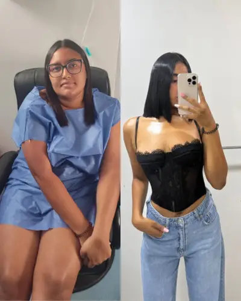
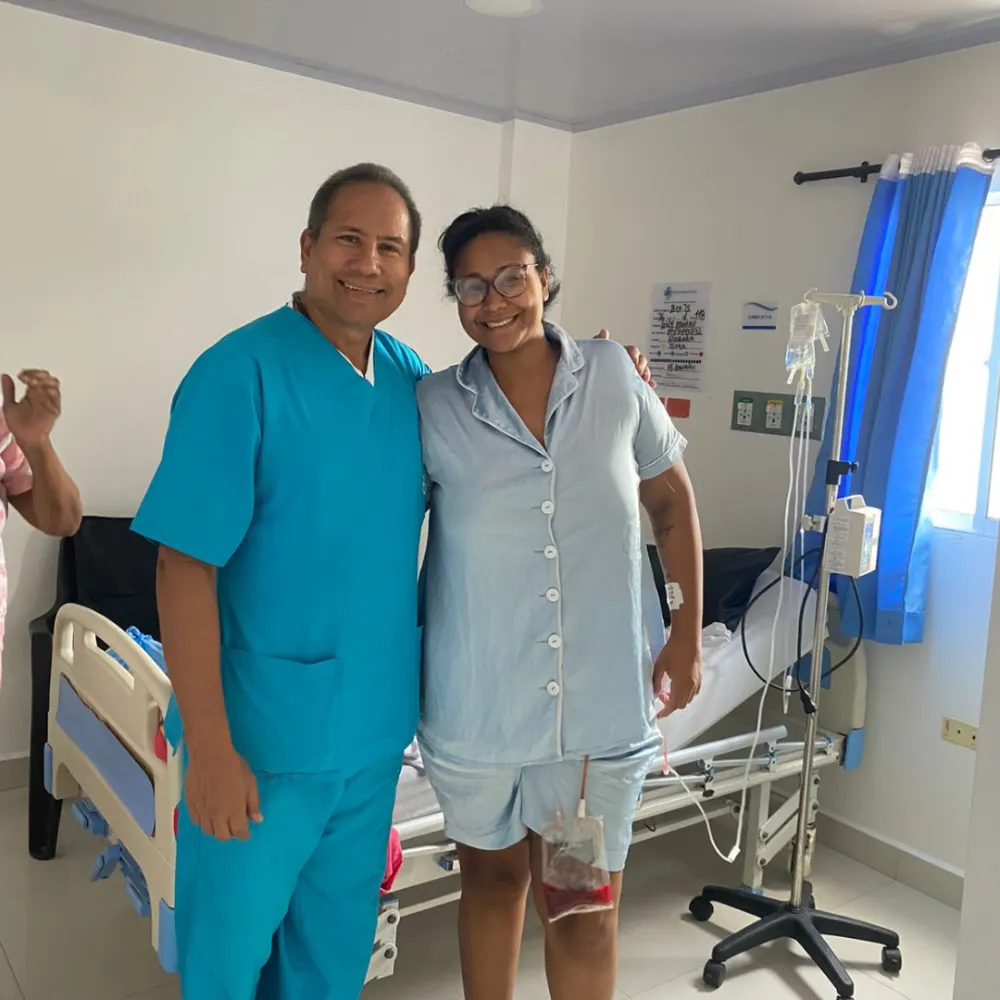

IMPORTANTE: MIRA ESTO ANTES DE SEGUIR
Cirujano Bariátrico y Metabólico · +17 años de experiencia · Creador de la Manga Gástrica Wii
Si necesitas perder 15, 30 o más de 50 kg de exceso de peso, te ayudamos a encontrar el procedimiento adecuado, con acompañamiento médico especializado en todo el proceso.

¿TE IDENTIFICAS?
Si marcaste varias... No estás solo. Muchas personas llegan exactamente así.
¿CÓMO FUNCIONA NUESTRO PROGRAMA INTEGRAL?


"Mi objetivo no es operar a más personas. Es ayudar a cada paciente a encontrar el tratamiento correcto para recuperar su salud, su movilidad y su calidad de vida."
— Dr. Roger Méndez Roca
Miembro de IFSO, SECO y ACOCIB
SOBRE LA INVERSIÓN
El Dr. Roger responde esta pregunta directamente.
Durante esta campaña podrás acceder a beneficios especiales y alternativas de financiación para iniciar tu tratamiento.
En tu valoración podrás:
Escríbenos directamente y nuestro equipo te atenderá para resolver todas tus dudas sobre el Programa Integral Bariátrico.
Escribir por WhatsAppRespuesta rápida · Horario de atención